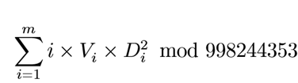

BZPRO
#5461. [PKUWC2018]Minimax
内存限制：512 MiB
时间限制：10 Sec
提交
提交记录
讨论
题目描述
小 C 有一棵 n 个结点的有根树，根是 1 号结点，且每个结点最多有两个子结点。
定义结点 x 的权值为：
1.若 x 没有子结点，那么它的权值会在输入里给出，保证这类点中每个结点的权值互不相同。
2.若 x 有子结点，那么它的权值有 px的概率是它的子结点的权值的最大值，有 1?px的概率是它的子结点的权值的最小值。
现在小 C 想知道，假设 1 号结点的权值有 m 种可能性，权值第 i 小的可能性的权值是 Vi，它的概率为 Di，求：

输入格式
输入
第一行一个正整数 n；
第二行 n 个整数，第 i个整数表示第 i 个结点的父亲的编号，其中第 1 个结点的父亲为 0；
第三行 n 个整数，若第 i 个结点没有子结点，则第 i 个数为它的权值，否则第 i 个数为 pi×10000，保证 pi×10000是个正整数。
0<pi<1,1<=N<=3*10^5,1<wi<=10^9
输出格式
输出答案
样例
样例输入
3
0 1 1
5000 1 2
样例输出
748683266
数据范围与提示